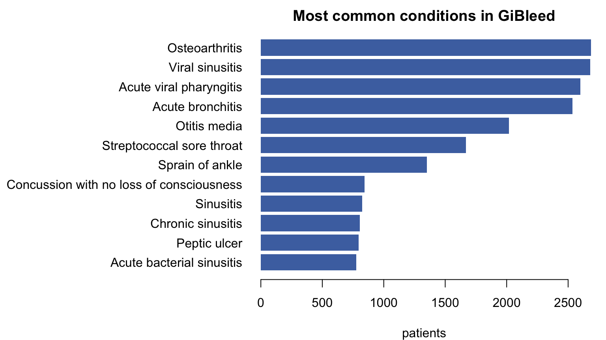

library(DSI); library(DSOpal); library(dsBaseClient); library(dsOMOPClient)Federated analysis on GiBleed
A larger, boolean-only OMOP dataset — does a prior peptic ulcer raise the odds of GI bleeding?
Download the R script (.R) Source (.Rmd)
Welcome
In the first tutorial you learned the whole dsOMOP workflow on MIMIC (~100 ICU patients). Here we take exactly the same tools to a second, larger dataset — GiBleed (~2,700 patients) — for a more powerful study, and reproduce a classic federated finding:
Does a prior history of peptic ulcer raise the odds of a gastrointestinal (GI) bleed?
ImportantWhat’s different about GiBleed
GiBleed is a synthetic OHDSI cohort with no numeric lab/vital values — measurement.value_as_number is essentially empty. So there is nothing to take a mean or histogram of. Instead, every clinical variable becomes a boolean (“does this patient have this condition / drug, yes or no?”) or a count (“how many records?”). Same recipe machinery, different format.
1. Connect
builder <- DSI::newDSLoginBuilder()
builder$append(server = "nairobi", url = "https://nairobi.datashield.live",
user = "ethiopia", password = "P@ssw0rd", profile = "omop")
builder$append(server = "douala", url = "https://douala.datashield.live",
user = "ethiopia", password = "P@ssw0rd", profile = "omop")
builder$append(server = "dakar", url = "https://dakar.datashield.live",
user = "ethiopia", password = "P@ssw0rd", profile = "omop")
conns <- DSI::datashield.login(logins = builder$build())
ds.omop.connect(resource = "omop_demo.gibleed", symbol = "omop", conns = conns)Note the resource is now omop_demo.gibleed (not mimic).
2. Confirm there are no numeric values
Before choosing how to model, check the data. Ask for a numeric summary of any measurement — it comes back empty, which is why we will treat everything as boolean:
ds.omop.column.stats("measurement", "value_as_number",
scope = "pooled", symbol = "omop", conns = conns)#> $nairobi
#> $n_total
#> [1] 14210
#>
#> $n_missing
#> [1] 14210
#>
#> $n_distinct
#> [1] 0
#>
#> $n_persons
#> [1] 885
#>
#> $mean
#> [1] NA
#>
#> $sd
#> [1] NA
#>
#>
#> $douala
#> $n_total
#> [1] 13850
#>
#> $n_missing
#> [1] 13850
#>
#> $n_distinct
#> [1] 0
#>
#> $n_persons
#> [1] 875
#>
#> $mean
#> [1] NA
#>
#> $sd
#> [1] NA
#>
#>
#> $dakar
#> $n_total
#> [1] 15985
#>
#> $n_missing
#> [1] 15985
#>
#> $n_distinct
#> [1] 0
#>
#> $n_persons
#> [1] 925
#>
#> $mean
#> [1] NA
#>
#> $sd
#> [1] NA
#>
#>
#> $pooled
#> $n_total
#> [1] 44045
#>
#> $mean
#> NULL
#>
#>
#> Warnings:
#> - Strict pooling failed: invalid mean/count from server(s) nairobi, douala, dakar
Note
An NA mean / zero distinct values confirms value_as_number carries no data here. GiBleed records that an event happened, not a measured quantity — so our variables will be presence flags and counts, never means.
3. The population
GiBleed is bigger than MIMIC. Sex, pooled across the three sites:
ds.omop.concept.prevalence("person", concept_col = "gender_concept_id",
scope = "pooled", symbol = "omop", conns = conns)#> $nairobi
#> concept_id concept_name n_persons n_records
#> 1 8507 MALE 445 445
#> 2 8532 FEMALE 440 440
#>
#> $douala
#> concept_id concept_name n_persons n_records
#> 1 8532 FEMALE 445 445
#> 2 8507 MALE 430 430
#>
#> $dakar
#> concept_id concept_name n_persons n_records
#> 1 8532 FEMALE 485 485
#> 2 8507 MALE 440 440
#>
#> $pooled
#> concept_id n_persons concept_name
#> 1 8532 1370 FEMALE
#> 2 8507 1315 MALE
NoteA reference year for age
GiBleed is a frozen ~2019 Synthea snapshot, so we anchor age to 2019 (omop_variable_age(year = 2019)) — the dataset’s own era, not “today”. (For MIMIC we used 2024; each dataset gets its own collection year.)
4. Explore what was recorded
No numbers to plot — so our “distribution picture” is a prevalence bar chart: how many patients have each of the most common conditions.
cond <- ds.omop.concept.prevalence("condition_occurrence", metric = "persons",
top_n = 12, scope = "pooled", symbol = "omop", conns = conns)$pooled
cond <- cond[order(cond$n_persons), ]
par(mar = c(4, 17, 2, 1))
barplot(cond$n_persons, names.arg = cond$concept_name, horiz = TRUE, las = 1,
col = "#4C72B0", border = NA, xlab = "patients",
main = "Most common conditions in GiBleed")
The two conditions for our question are in that list, but we don’t have their codes yet — we only know their names. Turn a name into a concept_id with concept.search:
ds.omop.concept.search("gastrointestinal hemorrhage", domain = "Condition",
symbol = "omop", conns = conns)
ds.omop.concept.search("peptic ulcer", domain = "Condition",
symbol = "omop", conns = conns)
TipWhat we’re after
- GI hemorrhage (
192671) — our outcome. - Peptic ulcer (
4027663) — the antecedent condition we think raises the risk.
Both affect enough patients (hundreds each) to model. Notice the long list of near-universal Synthea complaints (osteoarthritis, sinusitis…) — we’ll meet one of those again in Section 7.
5. Build the analysis table (all boolean)
A wide person-level table with sex, age (anchored to 2019), and two boolean flags — GI bleed and peptic ulcer:
rec <- omop_recipe(
variables = list(
omop_variable(table = "person", column = "gender_concept_id", format = "sex_mf", name = "sex"),
omop_variable_age(name = "age", year = 2019),
omop_variable(table = "condition_occurrence", concept_id = 192671, format = "binary", name = "gi_bleed"),
omop_variable(table = "condition_occurrence", concept_id = 4027663, format = "binary", name = "peptic_ulcer")
),
output = omop_output(name = "study", type = "wide")
)
recipe_execute(rec, out = c(study = "M"), symbol = "omop", conns = conns)Ratify what the server built, then read off each flag’s prevalence with a frequency table:
ds.colnames("M", datasources = conns)#> $nairobi
#> [1] "person_id" "gi_bleed" "peptic_ulcer" "sex" "age"
#>
#> $douala
#> [1] "person_id" "gi_bleed" "peptic_ulcer" "sex" "age"
#>
#> $dakar
#> [1] "person_id" "gi_bleed" "peptic_ulcer" "sex" "age"ds.dim("M", datasources = conns)#> $`dimensions of M in nairobi`
#> [1] 889 5
#>
#> $`dimensions of M in douala`
#> [1] 878 5
#>
#> $`dimensions of M in dakar`
#> [1] 927 5
#>
#> $`dimensions of M in combined studies`
#> [1] 2694 5ds.table("M$gi_bleed", datasources = conns)#>
#> Data in all studies were valid
#>
#> Study 1 : No errors reported from this study
#> Study 2 : No errors reported from this study
#> Study 3 : No errors reported from this study#> $output.list
#> $output.list$TABLE_rvar.by.study_row.props
#> study
#> M$gi_bleed nairobi douala dakar
#> 0 0.3286682 0.3295711 0.3417607
#> 1 0.3361169 0.3089770 0.3549061
#> NA NaN NaN NaN
#>
#> $output.list$TABLE_rvar.by.study_col.props
#> study
#> M$gi_bleed nairobi douala dakar
#> 0 0.8188976 0.8314351 0.8166127
#> 1 0.1811024 0.1685649 0.1833873
#> NA 0.0000000 0.0000000 0.0000000
#>
#> $output.list$TABLE_rvar.by.study_counts
#> study
#> M$gi_bleed nairobi douala dakar
#> 0 728 730 757
#> 1 161 148 170
#> NA 0 0 0
#>
#> $output.list$TABLES.COMBINED_all.sources_proportions
#> M$gi_bleed
#> 0 1 NA
#> 0.822 0.178 0.000
#>
#> $output.list$TABLES.COMBINED_all.sources_counts
#> M$gi_bleed
#> 0 1 NA
#> 2215 479 0
#>
#>
#> $validity.message
#> [1] "Data in all studies were valid"ds.table("M$peptic_ulcer", datasources = conns)#>
#> Data in all studies were valid
#>
#> Study 1 : No errors reported from this study
#> Study 2 : No errors reported from this study
#> Study 3 : No errors reported from this study#> $output.list
#> $output.list$TABLE_rvar.by.study_row.props
#> study
#> M$peptic_ulcer nairobi douala dakar
#> 0 0.3292812 0.3224101 0.3483087
#> 1 0.3316708 0.3341646 0.3341646
#> NA NaN NaN NaN
#>
#> $output.list$TABLE_rvar.by.study_col.props
#> study
#> M$peptic_ulcer nairobi douala dakar
#> 0 0.7007874 0.6947608 0.7108954
#> 1 0.2992126 0.3052392 0.2891046
#> NA 0.0000000 0.0000000 0.0000000
#>
#> $output.list$TABLE_rvar.by.study_counts
#> study
#> M$peptic_ulcer nairobi douala dakar
#> 0 623 610 659
#> 1 266 268 268
#> NA 0 0 0
#>
#> $output.list$TABLES.COMBINED_all.sources_proportions
#> M$peptic_ulcer
#> 0 1 NA
#> 0.702 0.298 0.000
#>
#> $output.list$TABLES.COMBINED_all.sources_counts
#> M$peptic_ulcer
#> 0 1 NA
#> 1892 802 0
#>
#>
#> $validity.message
#> [1] "Data in all studies were valid"6. The model
Now the question, as a logistic regression across all three hospitals:
fit <- ds.glm(
formula = "M$gi_bleed ~ M$age + M$sex + M$peptic_ulcer",
family = "binomial", datasources = conns)fit$coefficients#> Estimate Std. Error z-value p-value low0.95CI.LP high0.95CI.LP P_OR low0.95CI.P_OR high0.95CI.P_OR
#> (Intercept) -2.134120183 0.218628239 -9.76141138 1.648449e-22 -2.562623658 -1.705616708 0.1058245 0.07158298 0.1537331
#> M$age 0.001095675 0.003251486 0.33697673 7.361344e-01 -0.005277121 0.007468471 1.0010963 0.99473678 1.0074964
#> M$sexM 0.005587622 0.104485422 0.05347752 9.573514e-01 -0.199200043 0.210375286 1.0056033 0.81938596 1.2341411
#> M$peptic_ulcer 1.363520777 0.104494099 13.04878257 6.457098e-39 1.158716106 1.568325447 3.9099351 3.18584037 4.7986059
ImportantThe result
A prior peptic ulcer multiplies the odds of GI bleeding roughly four-fold (OR ≈ 3.9, 95% CI well above 1, p astronomically small) — a strong, clinically coherent signal. Age and sex are not associated here. With ~2,700 patients the confidence interval is tight: this is the power a larger cohort buys you, and it was produced without any patient record leaving its hospital.
TipOptional: reproduce the full published model
The reference study also adjusts for NSAID drugs. dsOMOP can build a count across several drug concepts in one variable — omop_variable(table = "drug_exposure", concept_id = c(19059056, 1118084, 19078461, 1115171, 1124300), format = "count", name = "nsaid_n") (aspirin, celecoxib, ibuprofen, naproxen, diclofenac) — and a single-drug flag, e.g. diclofenac (1124300, format = "binary"). Adding them (gi_bleed ~ age + sex + peptic_ulcer + diclofenac + nsaid_n) leaves peptic ulcer dominant; the drug terms are weak/noise in this synthetic cohort, so don’t over-interpret them.
7. A cautionary tale: when a model breaks
Not every variable can be modelled. Osteoarthritis (80180) is recorded for every single patient in GiBleed. Try to predict it:
rec_oa <- omop_recipe(
variables = list(
omop_variable(table = "person", column = "gender_concept_id", format = "sex_mf", name = "sex"),
omop_variable_age(name = "age", year = 2019),
omop_variable(table = "condition_occurrence", concept_id = 80180, format = "binary", name = "osteoarthritis")
),
output = omop_output(name = "study", type = "wide"))
recipe_execute(rec_oa, out = c(study = "OA"), symbol = "omop", conns = conns)
fit_oa <- ds.glm("OA$osteoarthritis ~ OA$age + OA$sex", family = "binomial", datasources = conns)#> Warning in ds.glm("OA$osteoarthritis ~ OA$age + OA$sex", family = "binomial", : Did not converge after 20 iterations. Increase maxit parameter as necessary.fit_oa$coefficients[, c("Estimate", "p-value")]#> NULL
ImportantPerfect separation
Because the outcome is 100% prevalent (no “no” group to contrast against), the logistic regression cannot converge — you’ll see a “did not converge” warning and a wildly inflated intercept. The lesson: always check an outcome’s prevalence before modelling it. A variable everyone (or no one) has carries no information to fit.
DSI::datashield.logout(conns)Where to go next
You have now run the full federated workflow on two datasets — numeric-rich MIMIC and boolean-only GiBleed — and seen both a strong result and a broken one.
NotePractise it
The GiBleed exercise sheet asks you to find a different significant association in this cohort (with hints and a worked, executed solution).